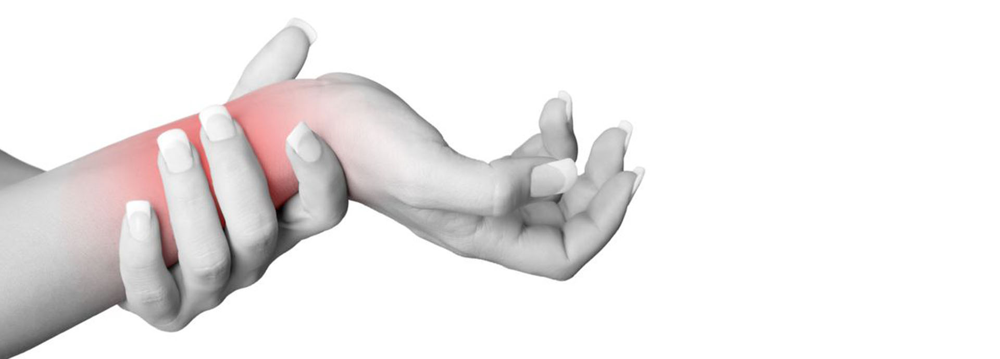
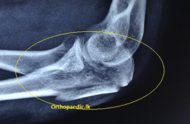
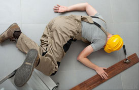
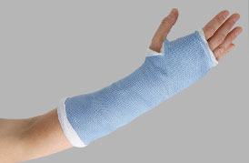
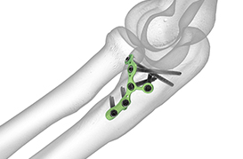
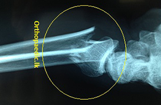
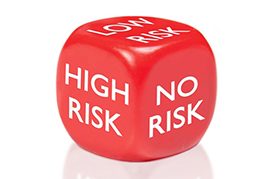
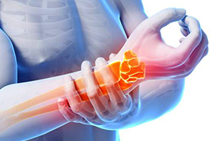
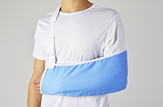

Overview

FRACTURES OF THE FOREARM FRACTURES CLOSER TO THE ELBOW JOINT
There are two bones in the forearm. One of the two bones (Ulna) is directly connected to the bone in the upper arm to make the elbow joint. The other bone (Radius) makes the wrist joint at the far end. The two bones make joints in between to allow turning of the hand upwards and downwards.

How Important Is This Fracture
Fractures of this part of the bone need to be operated to get back the normal function and activity back. Any other treatment will result in deformity and joint stiffness.
The fracture may involve either of the bones or both. Sometimes fracture may be associated with elbow dislocation

How Would You Sustain Fractures Of This Part Of The Bones
It happens when you land on the elbow

Can This Be Treated Without Operation?
Unfortunately no. Fracture involving the part of the bone (Proximal ulna) making the elbow joint of needs to be aligned perfectly.
It Is A Major Operation?
No. it is a minor operation when it is broken into two pieces. It can be fixed with two pins and a metal wire. Some fracture of this area need fixation with plates and screws in complex injuries.

What Happen After The Operation?
Your arm will be further support with a plaster of Paris half cast for two weeks. You could go home in 1-2 days

How Long Will It Take To Heal?
You will be fine in six weeks. Any residual lack of range of movement will improve slowly. This is the nature of elbow injuries There will be a course of physiotherapy to improve the range of movement

Any Alternative Treatment For This
I have seen many patients with irreversibly damaged elbows following the application of oils and herbal pastes prescribed by traditional practitioners.
Once you have reached this stage, whatever the operation is done to correct the problem will make it worse. You will be left with a stiff elbow.

What Is The Treatment For Fracture Of The Radius Closer To The Elbow Joint?
This will depend on how badly it is broken. Simple fractures of the head can be fixed. However, if it is broken into many pieces, removal of the bone pieces will do well than keeping them. Fracture of the bone is fixed with a plate and few screws.

Common Complications Of This Operation?
Usually no significant complication
FRACTURES IN MIDDLE PART OF THE BONES
There are two bones in the forearm. One of the two bones (Ulna) is directly connected to the bone in the upper arm to make the elbow joint. The other bone (Radius) makes the wrist joint at the far end. The two bones make joints in between to allow turning of the hand upwards and downwards.

How Does It Occur ?
A violent direct blow to the forearm could break both bones. If you try to defend a blow may break one bone (Ulna). Falls and motor vehicle accidents are the common other causes.

What Are The Dangers Of This Injury
The forearm two sets of muscles which moves your wrist and fingers. A crush to these muscles causes swelling of the forearm. The blood vessels and nerves that run between the muscles can get injured similarly.

How Badly Could It Break ?
This depends on the amount of force the forearm is subjected to. The bones could be broken into two and maintain the normal shape of the bone. Or the pieces may separate. It could be broken into many fragments. One of the pieces could pierce the skin. The forearm may look deformed, shortened, swollen, and bruised.

What Could Be Done At The Scene Of The Injury ?
You could splint the forearm incorporating the elbow and the wrist joint. Sling it on the neck. Apply some ice. A simple pain killer may be given. Please do not give anything else to eat and drink until you are advised to do so by the attending doctor. Many patients want to eat patties, Chinese rolls with a malted/aerated drink! Please take your medical records/pills you usually take along with you.
What Is The Treatment For Collar Bone Fractures?
You and your arm will be assessed for additional problems other than fracture. X-rays will be done. The arm will be supported with a plaster half cast until your operation if any.
How Long It Will Take To Heal?
Simple breaks/cracks in a bone are managed with plaster casts only. It will heal in six weeks.
Breaks with angular deformity are corrected with hand manipulation under anesthetic.
If the pieces are displaced it usually needs an operation and fixes the bone with plates and screws. Then the arm will be protected in a plaster slab until healing.

Opinion On Alternative Treatments ?
They do not know how to assess you and your arm. They do not know how to read an X-ray with a complex injury. It is likely if you are developing a complication/your injury pattern will be missed and incorrectly treated.
Bone with simple cracks will heal anyway. They just need a splint only for six weeks. Pulling of the broken arm is severely painful and inhuman thing to do. If the ends are separated they are NOT going to come back to normal. Please do not waste your time and suffer by opting for these.
Please get advised by the qualified.